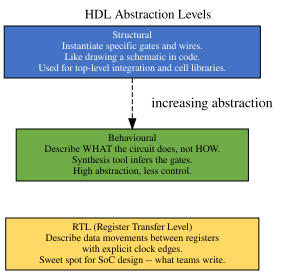
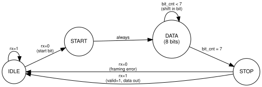
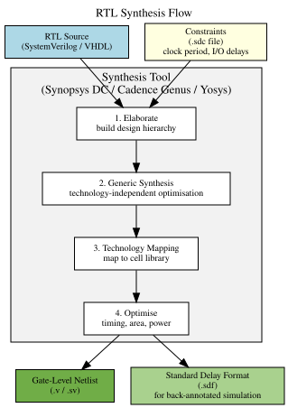

Series: Introduction to SoC Design | Article 9 of 11
Introduction
Hardware does not appear from nowhere. Before a single transistor is manufactured, a SoC's behaviour must be described in a language that both engineers and computers can process -- simulating it, verifying it, and ultimately synthesising it into real logic gates.
Hardware Description Languages (HDLs) are that language. They look superficially like programming languages, but they describe hardware -- circuits that exist and operate in parallel, not sequential lists of instructions. Understanding this distinction is the single most important step in learning HDL design.
The Fundamental Difference: Parallelism
In a software program, statements execute one after another:
# Software: sequential execution
a = read_sensor()
b = process(a)
c = output(b) # c is calculated AFTER b is calculated
In hardware, all blocks of logic are always active simultaneously. Every combinational logic path is constantly computing its output from its inputs, every clock edge triggers every flip-flop at once:
// Hardware: everything runs concurrently
// All these assignments happen in PARALLEL, every clock cycle
always_ff @(posedge clk) begin
reg_a <= input_a; // This flip-flop samples input_a
reg_b <= reg_a + 1; // This flip-flop samples reg_a + 1
reg_c <= reg_b << 2; // This flip-flop samples reg_b shifted left
end
// All three updates happen simultaneously on every rising clock edge
This parallel nature is what makes HDL difficult for software engineers at first: there is no "sequence of operations" -- there is a network of logic gates and registers, all computing simultaneously.
The Two Major HDLs: Verilog and VHDL
The industry is divided between two languages, both established in the 1980s and both IEEE-standardised:
Verilog -- C-like syntax, concise, originally designed for simulation. Extended into SystemVerilog (IEEE 1800) which adds OOP features, assertions, and randomised verification constructs.
VHDL (VHSIC Hardware Description Language) -- Ada-like syntax, strongly typed, verbose. Historically dominant in Europe, aerospace, and defence.
For this series, examples use SystemVerilog for hardware design and VHDL where instructive for comparison. The concepts are identical.
RTL vs Behavioural vs Structural
HDL code can be written at different levels of abstraction:

Structural -- instantiate specific gates and connect them with wires:
// Structural: instantiate specific primitives
and_gate U0 (.a(in_a), .b(in_b), .y(wire_and));
or_gate U1 (.a(wire_and), .c(in_c), .y(out));
Behavioural -- describe what the circuit does:
// Behavioural: synthesis tool decides the gates
assign out = (in_a & in_b) | in_c;
RTL -- explicit registers and data paths:
// RTL: explicit registers and data paths
always_ff @(posedge clk or negedge rst_n) begin
if (!rst_n) data_reg <= '0;
else data_reg <= data_in;
end
assign data_out = data_reg + offset;
SystemVerilog Key Constructs
Modules
The module is the fundamental building block -- equivalent to a function or class in software, but representing a hardware block with defined ports:
module adder #(
parameter WIDTH = 8 // configurable width
) (
input logic [WIDTH-1:0] a,
input logic [WIDTH-1:0] b,
input logic cin,
output logic [WIDTH-1:0] sum,
output logic cout
);
assign {cout, sum} = a + b + cin;
endmodule
Modules are instantiated to create the structural hierarchy of a SoC:
module alu (
input logic [31:0] src_a, src_b,
input logic [3:0] op,
output logic [31:0] result,
output logic zero
);
logic [31:0] add_result;
logic add_carry;
adder #(.WIDTH(32)) u_adder (
.a (src_a),
.b (src_b),
.cin (1'b0),
.sum (add_result),
.cout (add_carry)
);
always_comb begin
case (op)
4'b0000: result = add_result; // ADD
4'b0001: result = src_a - src_b; // SUB
4'b0010: result = src_a & src_b; // AND
4'b0011: result = src_a | src_b; // OR
4'b0100: result = src_a ^ src_b; // XOR
4'b0101: result = src_a << src_b[4:0]; // SLL
default: result = '0;
endcase
zero = (result == '0);
end
endmodule
Sequential Logic: always_ff
The always_ff block describes registers. It executes on every rising (or falling) clock edge:
// 8-entry FIFO with synchronous read and write
module fifo8 (
input logic clk, rst_n,
input logic [7:0] wdata,
input logic wen, ren,
output logic [7:0] rdata,
output logic full, empty
);
logic [7:0] mem [0:7];
logic [2:0] wptr, rptr;
logic [3:0] count;
always_ff @(posedge clk or negedge rst_n) begin
if (!rst_n) begin
wptr <= '0;
rptr <= '0;
count <= '0;
end else begin
if (wen && !full) begin
mem[wptr] <= wdata;
wptr <= wptr + 1'b1;
count <= count + 1'b1;
end
if (ren && !empty) begin
rptr <= rptr + 1'b1;
count <= count - 1'b1;
end
end
end
assign rdata = mem[rptr];
assign full = (count == 4'd8);
assign empty = (count == 4'd0);
endmodule
Combinational Logic: always_comb
The always_comb block describes purely combinational logic -- it re-evaluates whenever any of its inputs change:
// Priority encoder: find the index of the highest-priority set bit
module priority_enc (
input logic [7:0] req,
output logic [2:0] grant_id,
output logic valid
);
always_comb begin
valid = |req;
grant_id = '0;
if (req[7]) grant_id = 3'd7;
else if (req[6]) grant_id = 3'd6;
else if (req[5]) grant_id = 3'd5;
else if (req[4]) grant_id = 3'd4;
else if (req[3]) grant_id = 3'd3;
else if (req[2]) grant_id = 3'd2;
else if (req[1]) grant_id = 3'd1;
else grant_id = 3'd0;
end
endmodule
Finite State Machines in RTL
The Finite State Machine (FSM) is one of the most important patterns in digital design. An FSM transitions between a finite set of states based on inputs and the current state, producing outputs based on state.
Example: Simple UART Receiver FSM
typedef enum logic [1:0] {
IDLE = 2'b00,
START = 2'b01,
DATA = 2'b10,
STOP = 2'b11
} uart_state_t;
module uart_rx (
input logic clk, rst_n,
input logic rx,
output logic [7:0] data,
output logic valid
);
uart_state_t state;
logic [2:0] bit_cnt;
logic [7:0] shift_reg;
always_ff @(posedge clk or negedge rst_n) begin
if (!rst_n) begin
state <= IDLE;
bit_cnt <= '0;
shift_reg <= '0;
valid <= 1'b0;
end else begin
valid <= 1'b0;
case (state)
IDLE: if (!rx) state <= START;
START: begin
bit_cnt <= '0;
state <= DATA;
end
DATA: begin
shift_reg <= {rx, shift_reg[7:1]};
if (bit_cnt == 3'd7) state <= STOP;
else bit_cnt <= bit_cnt + 1'b1;
end
STOP: begin
if (rx) begin
data <= shift_reg;
valid <= 1'b1;
end
state <= IDLE;
end
endcase
end
end
endmodule
The corresponding state diagram:

Simulation and Testbenches
HDL code is verified by simulation -- running the design against a set of inputs (a testbench) and checking the outputs.
A testbench is not synthesisable. Its job is to: 1. Instantiate the DUT (Device Under Test) 2. Generate stimulus (clock, inputs) 3. Check outputs against expected values 4. Report pass/fail
`timescale 1ns/1ps
module tb_counter;
logic clk, rst_n, en;
logic [3:0] count;
counter #(.WIDTH(4)) dut (.*);
initial clk = 0;
always #5 clk = ~clk;
initial begin
rst_n = 0; en = 0;
@(posedge clk); #1;
rst_n = 1;
@(posedge clk); #1;
en = 1;
repeat(20) @(posedge clk);
en = 0;
repeat(5) @(posedge clk);
if (count !== 4'd4)
$error("FAIL: expected 4, got %0d", count);
else
$display("PASS");
$finish;
end
initial begin
$dumpfile("counter_tb.vcd");
$dumpvars(0, tb_counter);
end
endmodule
SystemVerilog Assertions (SVA)
Assertions are formal, self-checking properties embedded directly in the design or testbench. They check that the hardware obeys its specification throughout simulation.
// Assert: write enable must not be asserted when full
property no_overflow;
@(posedge clk) disable iff (!rst_n)
(full |-> !wen);
endproperty
assert property (no_overflow)
else $error("FIFO overflow attempted!");
// Assert: data must be stable while valid and not yet consumed
property data_stable;
@(posedge clk) disable iff (!rst_n)
(valid && !ready) |=> $stable(data);
endproperty
assert property (data_stable)
else $error("Data changed while valid/!ready");
// Cover: verify the full condition is exercised in tests
cover property (@(posedge clk) full);
Assertions serve as executable specifications -- they document intended behaviour and catch violations automatically during simulation.
Common RTL Pitfalls
Unintended Latches
If a case or if statement in always_comb does not cover all possible input combinations, synthesis infers a latch -- level-sensitive storage that was not intended:
// BAD: missing default -> inferred latch on 'out'
always_comb begin
case (sel)
2'b00: out = a;
2'b01: out = b;
// 2'b10 and 2'b11 not covered -> LATCH!
endcase
end
// GOOD: add default assignment before the case
always_comb begin
out = '0;
case (sel)
2'b00: out = a;
2'b01: out = b;
endcase
end
Simulation-Synthesis Mismatch
Some SystemVerilog constructs simulate differently from how they synthesise. initial blocks, delays (#100), and complex data types exist only for simulation and are ignored or unsupported during synthesis. Always verify that RTL synthesises to the intended hardware, not just simulates correctly.
The Synthesis Step
Synthesis transforms RTL into a gate-level netlist -- a description in terms of actual standard cells (AND, OR, flip-flop, multiplexer cells) from a technology library.

The synthesis tool reads the RTL plus a constraints file (.sdc) that specifies the target clock frequency and I/O timing budgets, then maps to whatever cell library the target process provides.
Summary
Hardware Description Languages are the foundation of SoC design. SystemVerilog (and VHDL) describe digital logic at the Register Transfer Level -- specifying registers and the combinational logic that transfers data between them. The key mental model shift from software is parallelism: all RTL executes simultaneously, not sequentially. Modules provide the structural hierarchy for building large designs from smaller, verifiable blocks. FSMs are a core design pattern for controlling sequential behaviour. Simulation and assertions verify correctness before committing to silicon. Synthesis transforms the RTL into gate-level hardware.
Further Reading
- RTL Synthesis and Timing Closure -- Constraint writing, static timing analysis, ECO flows
- SoC Verification with UVM -- SystemVerilog class-based testbench architecture
- Formal Verification Methods -- SVA property specification, model checking
Previous: Article 08 -- Peripherals and I/O